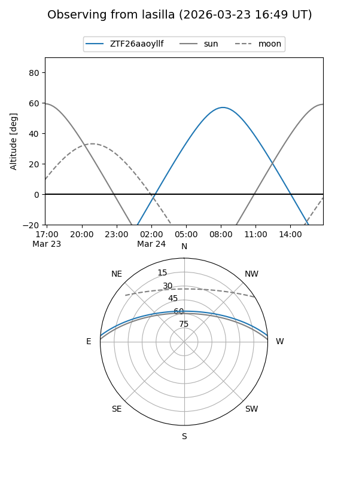
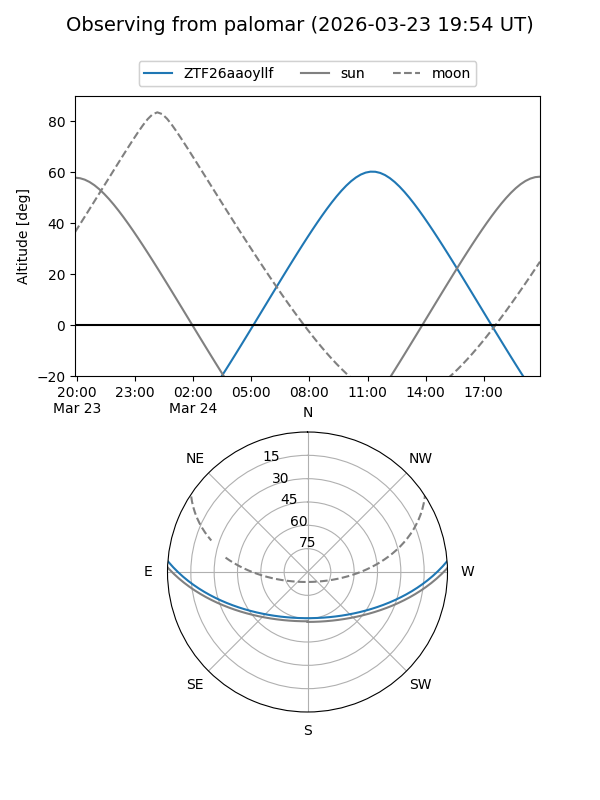

ZTF26aaoyllf
Target ZTF26aaoyllf at 2026-03-23 12:49
Aliases and brokers:
FINK: link
Lasair: link
ALeRCE: link
alt names
ZTF26aaoyllf (ztf,fink_ztf)
Coordinates:
equatorial (ra, dec) = 233.5285,+3.75864
equatorial (HMS+DMS) = 15:34:06.84,+03:45:31.11
galactic (l, b) = (9.1348,+44.70717)
Flags:
Photometry:
last ztfg=17.91
1 ztfg detections
Lightcurve
Visibility


Additional plots